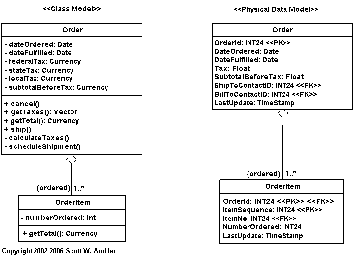

Hibernate is an object-relational mapping library for Java based applications. It provides a mechanism to create objects from the existing relational model (schema) in the data store. To understand how this works you must first understand object-relational mapping.
What is object-relational mapping?
Object-relational mapping is the idea of transforming entity relational models to fit class hierarchies. In web based applications there are normally persistent data stores where the data for the application is held. The data is modelled with entities and tables, which vary greatly from traditional objects. A java object could contain data that spans over multiple tables and could even include one-to-many or many-to-many relationships.

In this simple example it is easy to see how the class model (on the left) relates to the relational model (on the right). The problem is that the data types for the class model are not the same as the relational model. The hibernate libraries help to bring cohesion between the class model and the entity model.
Hibernate works by achieving the mapping described above and does so in a few steps.
public class Student {
private Long id;
private String firstName;
private String lastName;
private String address;
private Set course = new HasSet();
//getter and setter methods removed here for brevity.
}
Here is an example hbm.xml for a student object. Notice the many-to-many relationship for the course objects. The courses is a set of course objects.
<?xml version="1.0"?> <!DOCTYPE hibernate-mapping PUBLIC "-//Hibernate/Hibernate Mapping DTD 3.0//EN" "http://hibernate.sourceforge.net/hibernate-mapping-3.0.dtd"> <hibernate-mapping> <class name="com.icesoft.icefaces.tutorial.crud.hibernate.Student" table="students"> <id name="studentId" column="student_id"> <generator class="increment"/> </id> <property name="firstName" column="first_name"/> <property name="lastName" column="last_name"/> <property name="address"/> <set name="courses" table="student_courses"> <key column="student_id"/> <many-to-many column="course_id" class="com.icesoft.icefaces.tutorial.crud.hibernate.Course"/> </set> </class> </hibernate-mapping>
<!DOCTYPEhibernate-configurationPUBLIC "-//Hibernate/HibernateConfigurationDTD3.0//EN" "http://hibernate.sourceforge.net/hibernate-configuration-3.0.dtd"> <hibernate-configuration> <session-factory> <!--Database connection settings--> <property name="connection.driver_class">org.gjt.mm.mysql.Driver</property> <property name="connection.url">jdbc:mysql://localhost/register</property> <property name="connection.username">test</property> <property name="connection.password">test</property> <!--SQLdialect--> <property name="dialect">org.hibernate.dialect.MySQLInnoDBDialect</property> <!--EchoallexecutedSQLtostdout--> <property name="show_sql">true</property> <property name="current_session_context_class">thread</property> <mapping resource="com/icesoft/icefaces/tutorial/crud/hibernate/Course.hbm.xml"/> <mapping resource="com/icesoft/icefaces/tutorial/crud/hibernate/Student.hbm.xml"/> </session-factory> </hibernate-configuration> This file needs to be named Hibernate.cfg.xml and must be placed in the root source directory.
The HibernateUtil class instantiates a new Hibernate session so that other classes can use Hibernate to retrieve persistent objects.
package com.icesoft.icefaces.tutorial.crud.hibernate.util;
import org.hibernate.SessionFactory;
import org.hibernate.cfg.Configuration;
public class HibernateUtil {
private static final SessionFactory sessionFactory;
static {
try {
// Create the SessionFactory from hibernate.cfg.xml
sessionFactory = new Configuration().configure().buildSessionFactory();
} catch (Throwable ex) {
// Make sure you log the exception, as it might be swallowed
System.err.println("Initial SessionFactory creation failed." + ex);
throw new ExceptionInInitializerError(ex);
}
}
public static SessionFactory getSessionFactory() {
return sessionFactory;
}
}
The following snippet of code retrieves a student object from the database.
Session session = HibernateUtil.getSessionFactory().getCurrentSession(); session.beginTransaction(); Student s = (Student) session.get(Student.class, 123l); session.getTransaction().commit(); session.close();
This snippet of code retrieves the student with the id 123 from the database. Hibernate actually generates the SQL that is required for the objects and then maps the results to the data fields.
Sources:
Ambler, Scott W. "Mapping Objects to Relational Databases: O/R Mapping in Detail." Agile Data. 8 April 2009 <http://www.agiledata.org/essays/mappingObjects.html>.
Elliott, James. "What is Hibernate." 21 September 2005. O'Reilly On Java. 14 April 2009 <http://www.onjava.com/pub/a/onjava/2005/09/21/what-is-hibernate.html>.
Hibernate. "The First Hibernate Application." Introduction to Hibernate. 12 April 2009 <http://www.hibernate.org/hib_docs/v3/reference/en-US/html/tutorial-firstapp.html>.
ICEsoft Technologies Inc. "Hibernate Tutorial." 2006. ICEfaces Tutorial. 14 April 2009 <http://facestutorials.icefaces.org/tutorial/hibernate-tutorial.html>.